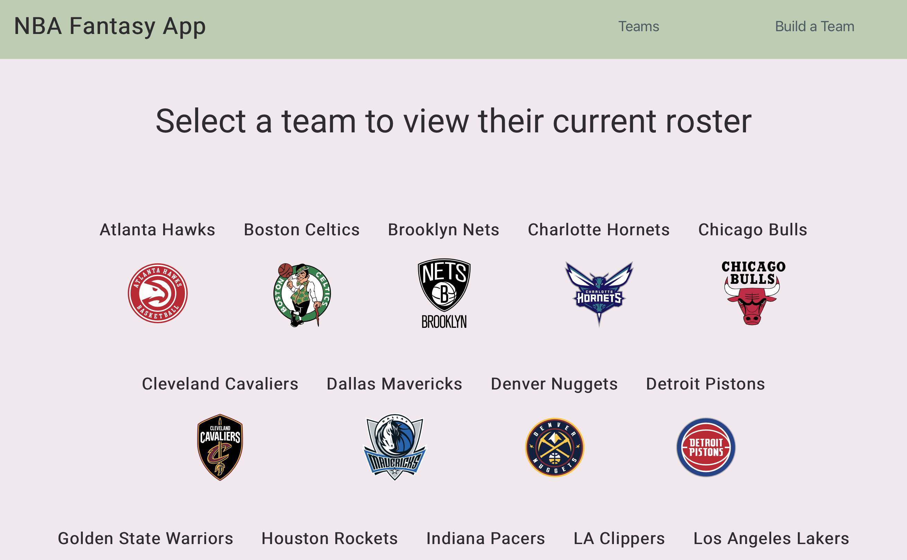
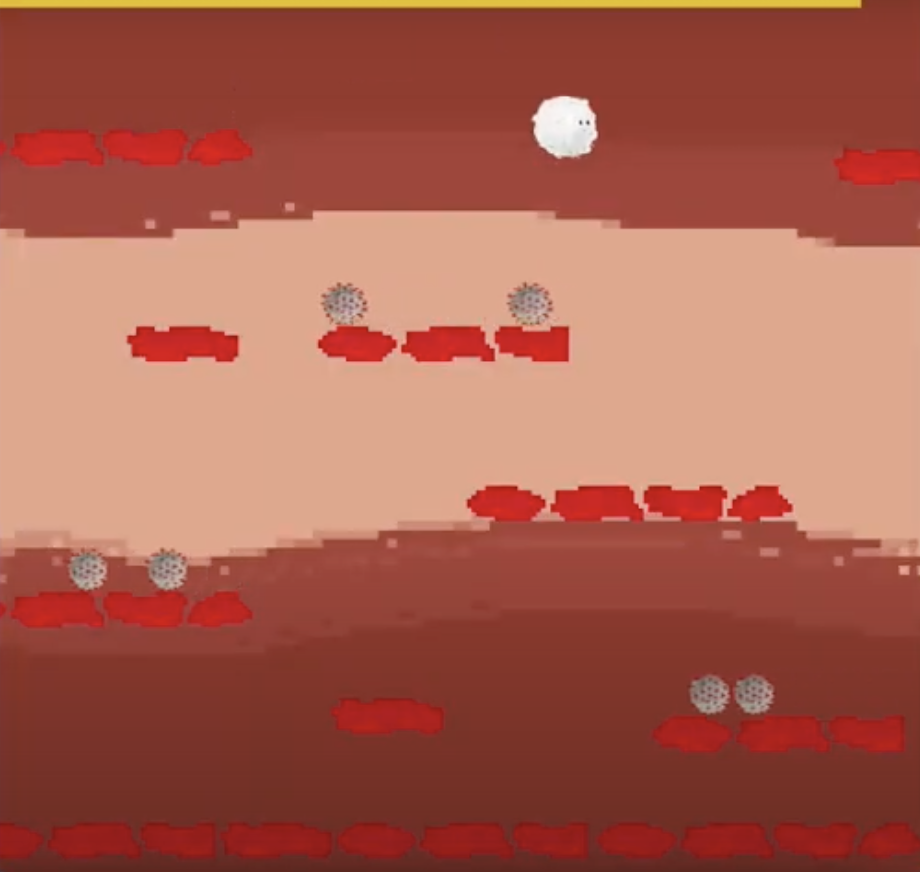

I created a React App using the OpenWeatherMap API to fetch weather forecast data. This was my very first project using React! I designed the interface of the app and implemented the search and submit functions so users would be able to type in any city and retrieve a live weather forecast of that city. I referred to the API data for the temperature, weather status, country, and weather icon. When provided with an invalid city name, the app does not return anything.

I am currently working on an NBA fantasy application that can be used to assist NBA fans in creating their ideal fantasy teams. Using React and public APIs for individual NBA player statistics, the implementation of being able to view statistics for each active player is complete, and I am currently implementing a feature that will allow users to assemble a hypothetical fantasy and see total team statistics. What I love about this project is that as an avid NBA fantasy player, it is something that can prove to be incredibly useful for me and my fellow fantasy players. There are so many different features and additions that I plan to continue to make, such as being able to connect a Google account to save progress, compare different players, and creating possible season projections! 
I was extremely lucky to be able to participate in Hack the North 2021, one of the largest Hackathons in North America. With a team with two other Computer Science students, we created a game in C++ and using Ubisoft's Hacker NEST framework that demonstrated to players the importance of staying healthy and having a strong immune system to be able to fight against certain viruses. In the context of the pandemic, we felt the core values of the game really reflected what we wanted to emphasize with the community - building immunity by getting vaccinated can help a lot in staying helthy during this time. The DevPost can be found here. 